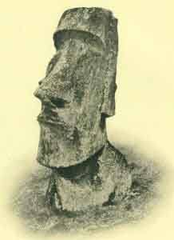

Sacred-texts home
Australian
Buy CD-ROM
Buy books about Pacific Mythology
General
Easter Island
New Zealand
Hawaii
Samoa
Tahiti
Melanesia
|

|
Pacific Islander Religions
|
This section has texts relating to the religion and mythology of the
Pacific Islanders.
General
 Oceanic Mythology
Oceanic Mythology
by Roland B. Dixon [1916].
A highly readable and scholarly cross-cultural study
of Pacific mythology and folklore, covering Polynesia, Micronesia,
Melanesia, Indonesia and Australia.
It includes summaries of material only available in obscure
19th Century scholarly journals.
Easter Island
Te Pito Te Henua, Or Easter Island
by William J. Thomson [1891]
Includes images of the famous rongo-rongo tablets and one of the few attested translations available.
Maori
Polynesian Mythology
by Sir George Grey [1854]
A primary source for the myths and legends of the Maori people of New Zealand.
Maori Religion and Mythology
by Edward Shortland [1882]
The Lore of the Whare-Wananga
S. Percy Smith [1913]
Hawaii
Hawaiian Mythology
by Martha Warren Beckwith [1940]
An extensive critical study of Hawaiian mythology, with
parallels to other Pacific islander cultures and numerous variations
on each text.
The Kumulipo, A Hawaiian Creation Chant
translated with commentary by Martha Warren Beckwith [1951]
The Kumulipo is the Royal Hawaiian Creation chant, describing the
emergence of life from the ocean and listing hundreds of generations
of descendants from the primal gods and goddesses.
The Kumulipo
translated by Queen Liliuokalani [1897]
A translation of the Kumulipo by the last Queen of Hawaii.
Unwritten Literature of Hawaii: The Sacred Songs of the Hula
by Nathaniel B. Emerson [1909]
Hawaiian Folk Tales
by Thomas G. Thrum [1907]
An anthology of classic Hawaiian folklore, including tales of Menehunes and Kahunas.
The following is a series of books of Hawaiian mythology,
folkore, and legends by W.D. Westervelt from the turn of the 20th Century.
Although Westervelt often wrote in a romanticized style,
the folklore is genuine.
Legends of Maui
by W.D. Westervelt [1910]
A collection of Hawaiian and Polynesian legends about the culture hero, Maui.
Hawaiian Legends of Old Honolulu
by W.D. Westervelt [1915]
Of all of the sacred landscapes of the Pacific, the area around Honolulu is rich in lore.
Hawaiian Legends of Volcanoes
by W.D. Westervelt [1916]
The Fire Goddess Pele, her deeds, family and loves.
Hawaiian Legends of Ghosts and Ghost-Gods
by W.D. Westervelt [1916]
Tales of the Hawaiian afterlife, and those who returned from it by magic or cunning.
Hawaiian Historical Legends
by W.D. Westervelt [1923, no renewal]
Stories from Hawaii during the period of European contact.
Samoa
The Samoan Story of Creation
by John Fraser
(Journal of the Polynesian Society, Vol. 1 164-88)
[1891].
Tahiti
Noa Noa
by Paul Gauguin, translated from the French by Otto Frederick Theis [1919]
Gauguin came to Tahiti to find the primitive, but was amazed by the advanced knowledge embedded in their mythology.
Melanesia
Baloma; the Spirits of the Dead in the Trobriand Islands
by Bronislaw Malinowski [1916]
A classic ethnographic monograph.